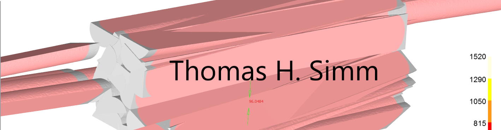

Communicating code: Presentations
Using notebooks and streamlit for presentations

Content
- Quarto
- powerpoint https://quarto.org/docs/presentations/
- html
- Jupyter books
- Streamlit
Quarto Presentations
Quarto supports a variety of formats for creating presentations, including:
revealjs — reveal.js (HTML)
pptx — PowerPoint (MS Office)
beamer — Beamer (LaTeX/PDF)I’ll consider the first two
Quarto PowerPoint overview
The steps to make a PowerPoint presentation from a notebook:
- Create the inbuilt template.pptx file
- Adjust it to match your own template
- At the top of the notebook insert
formatforpptxincluding the template file - Choose how you will define a new page
- You will probably need to manually check the slides and adjust as required
- especially for interactive content and code
Creating the template
(Office info correct for Office 365 Feb 2023, Version 2301 Build 16.0.16026.20002)
If your workplace has a custom template or you have one you always use, you can incorporate this into quarto.
However, quarto is quite specific on the form this template takes, and requires the following elements - Title Slide - Title and Content - Section Header - Two Content - Comparison - Content with Caption - Blank
By selecting Layout from the Home tab in powerpoint the different layouts can be seen
They can then be modified by going to View tab - Slide Master.
If using your own template you will need to match the names of the slides given above. These can be found by hovering over the slides on the left or right clicking on one and selecting “Rename Layout”
Alternatively, create a custom template using quarto and then modify this. The following command creates the template:
quarto pandoc -o template.pptx --print-default-data-file reference.pptx
Then go to View tab - Slide Master and modify each slide layout.
Note if you are trying to match a template, some tips: - go to Design -> Slide Size and match this to your template - when View tab - Slide Master is selected go to first tab (see above it will be left indented) on one you are copying from and select all on this then paste to the new template - these will be background images and other things that want to be passed to all slides - Check other slides for images and font-styles etc to match to the new template
Load the template
To load the template the first cell in the notebook needs to be modified as follows to reference the template.pptx file.
format:
pptx:
reference-doc: template.pptx
slide-level: 2In addition, we can also specify here the rule by which a new slide is defined. If slide-level: 2 is used a new slide is defined by “##’ and a new section header by ‘#’. So if we used ‘###’ this would be a heading within the slide.
If slide-level: 1 is used a new slide is defined by “#’ and ‘##’ this would be a heading within the slide (this is normally the default).
Check the slides
I have found creation of slides to powerpoint more prone to strange results than if .doc/.pdf/.html are used.
So check the slides, see if interactive content or code has been included (probably not) and if the slide content goes outside the slide.
In the example above - There is overlap of text on a slide - Strange ouput of a slide - Code output not displayed
Quarto HTML overview
With quarto two different html formats can be produced by using either html or revealjs.
Whereas, html produces the standard html format revealjs produces an interactive presentation format. https://quarto.org/docs/presentations/revealjs/
revealjs does pretty much the same as a powerpoint file but is more robust - interactive content is included - less issues with getting format to fit within the slide
But - Can’t use the ppt template - And maybe(?) there are issues with sharing this format? - Interactive elements not as well implemeneted as within pure html
Adding style to revealjs
A simple way to add template like details to a revealjs file is to add a style.css sheet.
In the example below, the style sheet adds logo.png to the bottom right of each sheet
The file style.css looks like this:
.reveal .slide-logo {
display: block;
position: fixed;
top: unset !important;
left: unset !important;
bottom: 50px;
right: 12px;
height: 100px !important;
width: 100x !important;
max-width: unset !important;
max-height: unset !important;
}And the revealjs part at the top of the jupyter notebook looks like this
revealjs:
slide-number: true
height: 1080
width: 1920
logo: logo.png
css: style.cssSo this would then look like the following, with the logo (logo.png) in the bottom right, and size and positioning given by the css file
What the revealjs file looks like
Streamlit Presentations
Streamlit is an open-source Python library that makes it easy to create and share beautiful, custom web apps for machine learning and data science. In just a few minutes you can build and deploy powerful data apps. So let’s get started!
Principally used to create apps, but some of the functionality works well for code/data presentations
Streamlit Functionality: overview
Streamlit allows various functionality:
- textbox
- images/videos
- charts/tables
- menus/buttons
- etc
Streamlit Functionality: streamlit_layout
But unlike some apps (am thinking MATLAB GUIs) you can’t create the look and functionality separately. So if you want something in a certain position it can be tricky. HTML can be used with st.markdown to give more control but it isn’t recommended to use by streamlit.
Instead, to create the layout as you would like they have the following features:
Streamlit Functionality: html
It is possible to add various additional personalisations using html. BUT it does come with security risks and so is [not recommended]](https://github.com/streamlit/streamlit/issues/152)
But it does allow much more control over the layout of the app that can be useful for a presentation: - Can add a background image - Can add background color to a textbox - Control over positioning of widgets - lots more
HTML is implementated using st.markdown with unsafe_allow_html=True inside the former
Streamlit Functionality: html examples
add background to a text box
text = "Code Examples"
st.markdown(f'<center><p style=font-family:"Calibri";background-color:#FFFFFF;color:#000000;font-size:42px;border-radius:10%><b>{text}</b></p></center>', unsafe_allow_html=True)
Or to add a background image
import streamlit as st
import base64
@st.cache(allow_output_mutation=True)
def get_base64_of_bin_file(bin_file):
with open(bin_file, 'rb') as f:
data = f.read()
return base64.b64encode(data).decode()
def set_png_as_page_bg(png_file):
bin_str = get_base64_of_bin_file(png_file)
page_bg_img = '''
<style>
.stApp {
background-image: url("data:image/png;base64,%s");
background-size: contain;
background-repeat: no-repeat;
background-attachment: scroll; # doesn't work
}
</style>
''' % bin_str
st.markdown(page_bg_img, unsafe_allow_html=True)
returnStreamlit Functionality: echo
Sometimes you want your Streamlit app to contain both your usual Streamlit graphic elements and the code that generated those elements. That’s where st.echo() comes in
Easier to display this by an example:
In the example above the right of the image is given below (st.columns is used, where the input for the function is found from the left column).
st.echois used with thewithstatement.- everything within the
withis printed to the screen and executed
with st.echo():
# Everything inside this block will be both printed to the screen
# and executed.
def do_pd_replace(text, text_search, text_sub):
col_name = "Start string"
df = pd.DataFrame(data=[text], columns=[col_name])
df["Final String"] = df[col_name].replace(
text_search, text_sub, regex=True
)
st.dataframe(df)
st.write(f"text_search = '{text_search}' and text_sub = '{text_sub}'")
st.write(f"Input string = '{text}'")
st.write(f"Output string = '{df['Final String'].values[0]}'")
do_pd_replace(text, text_search, text_sub)
Streamlit Functionality: pages
By simply creating a folder called pages and putting other streamlit .py files in the folder they can then be accessed in the sidebar.
- A main file needs to be outside the pages folder
- The .py files in pages behave as if they were outside the folder (i.e. when loading files/functions)